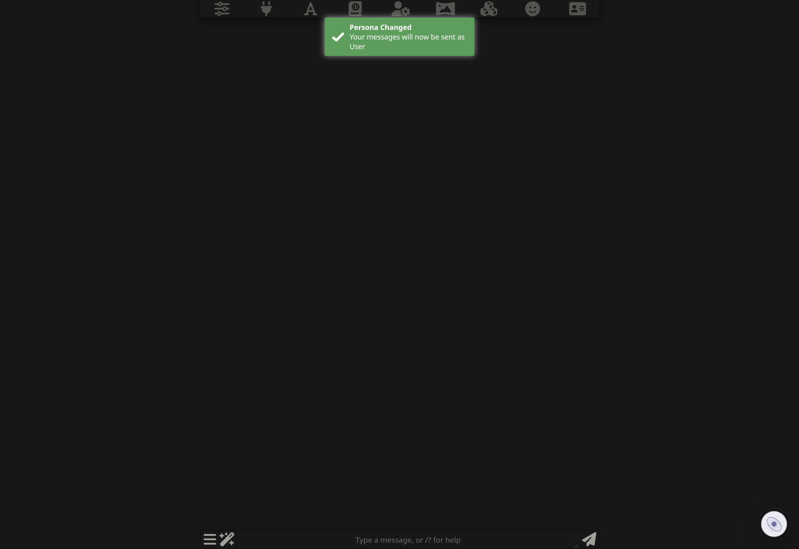

从玲的小窝拿最新版
按官方发布帖安装，刷新 SillyTavern。教程站不放仓库直链，避免你误装旧包或搬运版。
进玲的小窝找官方发布
→照发布帖安装按当前版本说明来
→刷新酒馆然后看右下角
先把“能不能用”确认掉，其他东西以后再学。
世界背面不是需要你每轮照顾的宠物。正常聊天，它自己在后台工作。
按官方发布帖安装，刷新 SillyTavern。教程站不放仓库直链，避免你误装旧包或搬运版。
它出现就代表插件已经进酒馆了。点一下，把世界背面打开。

没有专用口令，也不用每一轮点“推演”。故事照常发生。
那封信怎么办？
“烧了吧。”她把信扔进壁炉，火舌很快卷掉那道鹤纹火漆。
只有发现漏记、记错，或者你真的要调整后台状态时，才需要进去动它。
下一页教你第一次打开后，最值得先看哪几眼。